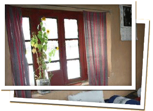

“Wander with us in the most breath-taking valley of the Himalayas, as we discover gorgeous landscapes, deep-blue lakes, sun-kissed white peaks, and life in the most remote villages of India. We have been touched by the magic of Spiti, and we know you will be too.”
~Ishita, host at Spiti Ecosphere
Please email us at untravel@indiauntravelled.com to plan and book your travels.
Spiti is a mini paradise on the shore of the gushing Spiti River, in the backdrop of snow-hooded, mist-covered Himalayas. Bordering Tibet in the east & Ladakh in the north, Spiti offers a rare experience of discovering life in the high Himalayas. The introspective winters of Spiti make it a land of many legends, and its strong Buddhist influence is evident in the hospitality and warmth of its people.
As you build your own trails in the valley with Spiti Ecosphere, you can trek & bike through its breath-taking landscapes and let the grandeur of the mighty Himalayas leave you in awe, draw conviction from its high-altitude monasteries & nunneries, discover its unique kaleidoscope of colours, dances & festivals, revel in the theatre art of the Bhuchens (a rare sect of wandering lamas), and rejoice in Spiti’s elusive wildlife, flora & fauna. Assertive as it might sound, Spiti has a way of connecting with its travellers that is hard to describe.
Please email us at untravel@indiauntravelled.com to plan and book your travels.
Depending on the trail you'd like to follow, accommodation can be provided in homestays, guesthouses, or alpine tents.
Homestays
The most fulfilling away of immersing yourself in the culture of Spiti is to live with a resident family in one of its many villages. The Himalayan Homestays program developed by Spiti Ecosphere, has a selection of homes in the villages of Langza, Komic, Demul, Lhalung, Dhankhar and Mikkim, which offer clean & comfortable rooms to travellers, together with the unique opportunity to bond with the home owners, savour home-cooked Tibetan delicacies, and interact with the Spitian way of life.
Spiti Ecosphere’s development endeavours in the region have equipped many of these homestays with solar lights & geysers, and dry-decomposing toilets that are environmentally friendly and uniquely Spitian. Hot water can be provided on request.
Guesthouses
Long-term accommodation can be arranged as a mix of homestays or in nominally priced guesthouses. The guesthouses offer options of single or double rooms and western-style toilets & bath with running hot & cold water.
Camping
In the higher reaches of the valley, alpine tents with sleeping bags can be provided, while food can be arranged at local homes in the villages.
Please email us at untravel@indiauntravelled.com to plan and book your travels.
Food & Drinks
Spiti's administrative capital, Kaza, offers a surprising array of cuisines, ranging from local Tibetan food, to typical North Indian dishes, Israeli food, and even wood-fired pizzas!
In the higher reaches of Spiti, traditional Tibetan food is more readily available, and typically consists of momos (dumplings) and thukpa (thick noodles in soup). The extreme winter climate practically cuts off the valley from the rest of India, making non-vegetarian food a predominant choice. In the summer months, vegetarian options are easily available.
Drinks
Butter tea, a Tibetan delicacy, is often served in the higher reaches of the village, and though it might not immediately appease the palette, it must be tried at least once!
Seabuckthorne is a highly nutritious wonder berry grown in the Himalayas, and drinks made from it are a rare specialty. Bottles of locally made Seabuckthorne crush can be bought at Spiti Ecosphere’s office in Kaza.
As with any mountain region, local alcoholic drinks are home-brewed in the villages to keep warm in the winter. Chang and Arakh, both made of barley, are the indigenous versions of beer and whiskey respectively.
Flavoured teas, including lemon, mint, ginger & honey, are served in all restaurants in Kaza, and a delight in Spiti’s extreme weather conditions.
Please email us at untravel@indiauntravelled.com to plan and book your travels.
Activities
Spiti Valley promises to delight any traveller, with its diversity of trails and experiences. Activities in & around the valley include:
Activities at & around the farm include:
- Mountain biking in the high-altitude terrains of Spiti
- Trekking to the highest inhabited villages of the Himalayas
- Interacting with lamas in the monasteries of Key, Komic, Dhankar & Tabo
- Camping on the banks of the Chandrataal Lake
- Riding the mountain ropeway at Chichum
- Birdwatching in the village of Langza
- Tracking elusive mountain wildlife in the Kibber Wildlife Sanctuary & Pin Valley National Park
- Volunteering on responsible travel projects with Spiti Ecosphere
- Post a letter from the world’s highest post office in Hikkim, or refuel your car at the world’s highest petrol pump in Kaza
Please email us at untravel@indiauntravelled.com to plan and book your travels.

{kind=link}
{kind=link}
{kind=link}
{kind=link}
{kind=link}
{kind=link}
{kind=link}
{kind=link}
{kind=link}
{kind=link}
Costs
Costs can vary depending on the trails you choose, the number of days you want to spend in Spiti, and the number of people you travel with.
Please email us at untravel@indiauntravelled.com to plan and book your travels.
Location
Spiti is located in the Trans-Himalayan belt of Himachal Pradesh, and is accessible by road from Shimla & Manali. Shimla & Manali can be reached from Delhi by air or road (bus or taxi).
The distance between Shimla and Kaza (Spiti’s administrative capital) is 420 kms, and typically takes 16-20 hours by bus or jeep. This route is practically open throughout the year. The distance between Manali and Kaza is 213 km, and typically takes 10-11 hours by bus or jeep. This route is only open between late May and early October (depending on weather conditions).
While both the routes are very scenic, the journey to Spiti up precarious mountain roads is not for the faint-hearted!
Best time to visit
The best time to visit the valley is between May and October, when days are warm, nights are pleasantly cool, and snowfall is rare.
Checklist
- A big rucksack or duffel bag, and a small backpack for day trips
- A mix of summer & winter clothes that can be worn in layers. Temperatures can vary greatly within the span of a few hours
- A good pair of walking shoes
- A wind & waterproof jacket
- Long-sleeved shirts and pants
- Water bottle for day hikes
- Sunglasses, sunhat, sunscreen – essential in the desert heat of Spiti
- Books to read & write, stationery to paint & draw, basically anything you’ve always loved to do and never got the time to
- Binoculars for animal watching
- Cosmetics you need
- Prescription medicines, if any
- Flash light
- Camera & batteries / charger
Please email us at untravel@indiauntravelled.com to plan and book your travels.
Photo Gallery
- A traditional homestay
- Homestay Room
- Learning to make momos while at a Homestay
 Spitti Valley
Spitti Valley- Spitti Valley
- A cultural performance
Please email us at untravel@indiauntravelled.com to plan and book your travels.
Reviews
“It was an amazing trip. I wanted my family to experience a different kind of holiday - that is totally different from the kind of lives they lead. I have travelled extensively in remote rural areas and wanted my family to experience this too! My family had a great time... Our [homestay] hosts were one of the most wonderful people we have met. Their simplicity and warmth bowled us over.“ ~ Ms Shobha Raghavan, travelled with her family in June 2013.
“Spiti is an unforgettable trip. After about 7 days since return, the tan is now fading but the experience of the trip has left an indelible mark. I was immensely impressed by the opportunity to spending life up and close with villagers in Demul and Komic and that would probably be the highlight for me. The trek from Demul to Komic and to Dhanker lake are great reminders of what being physically fit means in high altitude.
Ishita and team are doing a great job and took great care of us. The trip is an experience of lifetime.“ ~ Mayank, travelled solo on the Spiti Safari trip in June 2013.
“I’m still relishing the memories of Spiti and the wonderful people I met on this trip. The Kinnaur & Spiti jeep safari had been the best of the journeys I have undertaken till yet. I never expected the trip, especially the hotels & homestays to be as good as they were. The rooms in all the hotels were very neat and clean, especially bathrooms, and all of them had amazing views. The best was in Kalpa and Dhankar. The homestays in Demul & Komic too were beautiful. It was wonderful to put up with the locals of some of the remotest villages in Asia and experience their routine life. Chhering (our guide ) was par excellence. He was genuinely concerned about everyone on the trip and looked after each one of us personally. Everyone enjoyed his company and all the stories he told us about Spiti and its people. Driving in this part of Asia is one of the toughest things to do but Gatuk (our driver) was simply superb at it. A highly recommended journey for anyone who wants to try something different.“ ~ Mr Piyush Patni, travelled with friends on the Kinnaur Spiti Trip in June 2013.
“I loved the homestays. It felt great to stay with the locals. My favourite hotel was in Dhankar. Amazing views and awesome staff. Special mention of our Spitian guide Chering .He was a really nice person who really cared about our welfare. Overall amazing trip.Travel was strenuous, so can suggest 2 days halt at some places. Would want to volunteer at Ecosphere in future. They do amazing work.“ ~ Ms Vandhana Mohanraj, travelled solo on the Kinnaur Spiti Trip in June 2013.
“The trip was excellent. The guide named Cherring was very good and helpful. He was very genuine and caring. The car Innova and the driver named Gatok were also very good. The driver and the guide went out of their way and helped us for our needs. The scenery was pretty breathtaking. The people of Spiti were very kind and loving. They welcomed us with open hearts. The places to stay were pretty decent and clean.“ ~ Mr Ankit Agrawal, travelled with friends on the Kinnaur Spiti Trip in June 2013.
“It was an amazing trip. I wanted my family to experience a different kind of holiday — that is totally different from the kind of lives they lead. I have travelled extensively in remote rural areas and wanted my family to experience this too! My family had a great time.“ ~ Ms Shobha Raghavan, travelled with her family in June 2013.
“The trip to Spiti was fabulous, I enjoyed every bit of it. It had perfect amount of trekking for a beginner. Ishita and Tenzing from Ecosphere were very attentive towards our needs and made us feel very welcomed. I would love to go on any future trips you might have in other areas of Himalayas.“ ~ Mr Hitesh Singhal, lives in Delhi, and travelled solo.
“Our guide Tsering was fantastic as were our pilots/ drivers. And I left India with many new friends and wonderful memories. I am also inspired by the work Ecosphere does and would like to volunteer with them at some point.“ ~ Ms Sejal Mody, works in Hong Kong, and travelled solo.
“Spiti is truly amazing, interacting with the people out there, made me realize that it is so easy for one to be happy! I would like to congratulate ecosphere and india untraveled, for getting together such a wonderful mix of people. I thoroughly enjoyed interacting with each one of them, their curiosity about the world, was something that I shall take away with me. :) Our guide Tsering was also wonderful, his knowledge about the buddhist monasteries was extremely helpful!“
~ Mr Adhitya Prakash, works in Pune, and travelled solo.
“I had never heard of "Spiti" till I came across a beautiful snap on your website and from that moment on, I had decided that I am gonna go there! The location was amazing -- what blew me off is the onward and return journey (esp the return journey) -- it was so funny, I was sleepy but was keeping my eyes open so that I dont miss on a single amazing view! I especially loved the Kunzum pass :) The homestays were both really nice! It was the first of a kind experience for me and was a good experience -- we even learnt how to make Momos !! The Post office experience was lovely!! The thrill of posting from the highest post office, the lovely stamps, the hospitable postman -- they
even served us tea!! The post cards havent reached though. Not yet :P Overall -- I must say a lovely trip. The hotels selected, the locations, the guide. Looking forward to travelling with India Untravelled again :)“ ~ Ms Mansee Shah, works in Baroda, and travelled solo.
“I absolutely loved the Spiti trip! I had wonderful experiences meeting new people, exploring quaint villages and discovering the wonders of this beautiful country. I really enjoyed the homestays and eating local Spiti food. I also liked the fact that it was a small group, if it had been much larger we would have had a harder time moving about.“ ~ Ms Sami Steer, exchange student in Hyderabad, and travelled solo.
To feature your review / testimonial, please write to untravel@indiauntravelled.com.
Please get in touch at untravel@indiauntravelled.com with your requirements to plan a group trip to Spiti.
Responsible Travel
Spiti Ecosphere is a social enterprise based in Spiti. Its travels offer a unique insight into the culture, nature, history, ecology and legends of these valleys, while ensuring that your visits to these pristine locales benefit their economy, conservation and development. All emissions that are generated are calculated and offset through investments in Ecosphere’s renewable energy initiatives in the region. You can hence be assured that your trips will leave a zero carbon footprint in the Himalayas.
All revenues generated by Spiti Ecosphere are ploughed back for the economic, environmental and social development of the region. Below are some tips to practice responsible travel while at Spiti:
- Pack your bags with environmentally friendly things. Carry as little plastic as possible.
- Do not leave behind any non-biodegradable waste. Carry batteries and other toxic waste back to the cities where waste management is in place.
- What you wear has an impact – environmentally and culturally – dress ethically and appropriately.
- Respect the local culture and refrain from physical intimacy in public places.
- Carry a good water bottle. Pure water dug from the earth is available at the farm for re-filling your bottles. Refrain from buying numerous plastic mineral water bottles.
- Local food is great. Try it as much as possible and avoid packaged food. Ask for modifications in the food according to your taste, instead of wasting it.
- Avoid excessive consumption of alcohol and refrain from drugs, especially in public places.
- Seek permission before photographing people, so their privacy is respected.
- Do not pluck any medicinal plants & flowers, and do not disturb the wildlife.
Please email us at untravel@indiauntravelled.com to plan and book your travels.
Please email us at untravel@indiauntravelled.com to plan and book your travels.